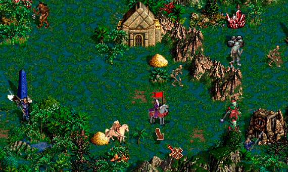

Фан-сайт гри Heroes of Might and Magic III
Heroes of Might and Magic III (Heroes III, HoMM III, укр. Герої Меча і Магії III) — відеогра жанру покрокової стратегії на тематику фентезі. Розроблена компанією New World Computing як третя гра серії Heroes of Might and Magic та видана компанією 3DO 22 лютого 1999 для ОС Windows та Mac OS. Для операційних систем на основі Linux гру було випущено в 2000-му році компанією Loki Software (Вікіпедія).

Долучайтеся до нашої спільноти фанатів цієї чудової гри!
У нас можна спілкуватися з однодумцями, ділитися фанартом, скачувати фанські карти, кампанії, моди.
А ще у нас зібCрано велику колекцію тематичних книжок (pdf, djvu) і матеріалів для настільних ігор PnP
(print-n-play, надрукуй і грай). Також ви можете придбати сувенірну продукцію - значки, футболки, кружки, наліпки і тому подібне.